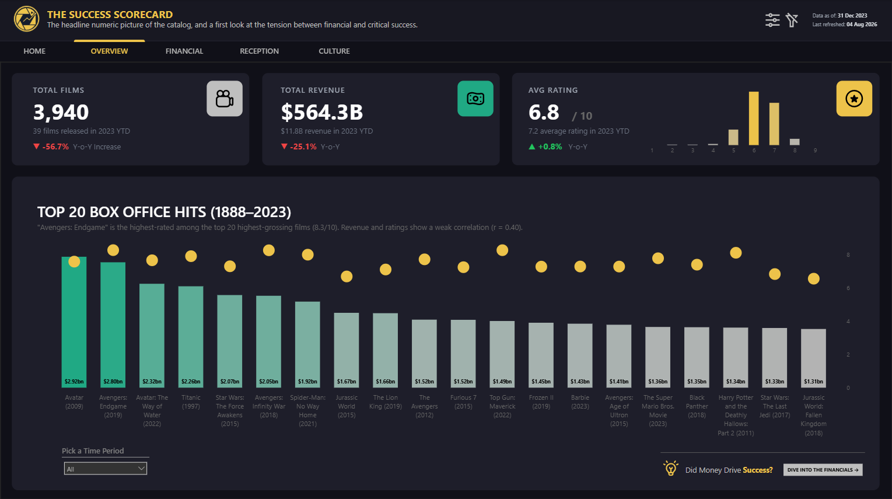
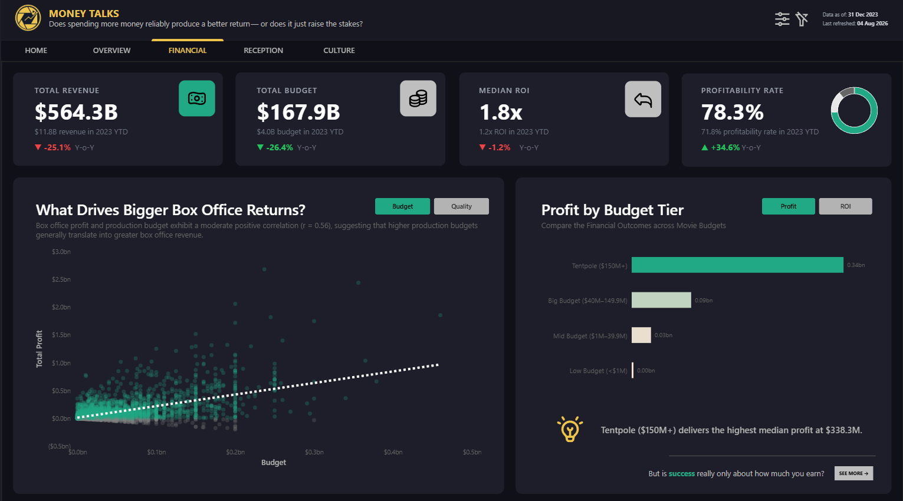
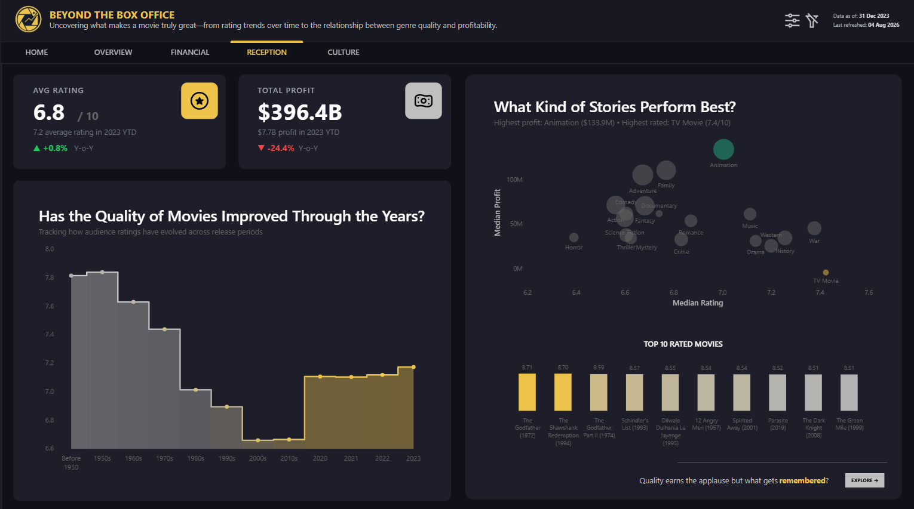
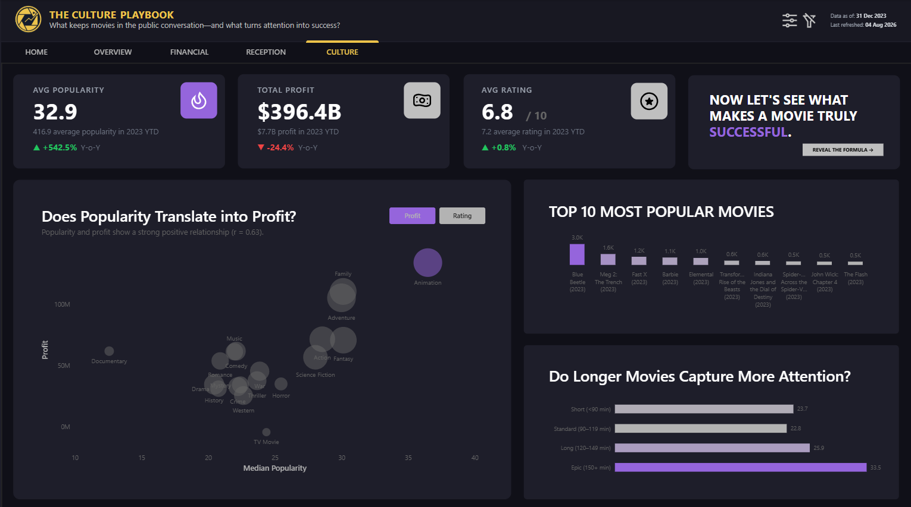

Deconstructing Movie Success Across Financial, Critical &
Cultural Dimensions.
Overview
This four-page Power BI data story analyzes 1M+ films spanning over a century (1800s–2000s) to answer a deceptively simple question: what actually makes a movie successful? Rather than building a single ranking dashboard, the project measures success through three independent lenses — Financial Performance, Critical Reception, and Cultural Reach — and reveals where they align, where they diverge, and what that divergence means for anyone trying to greenlight the next hit. The result reframes "success" from a single number into a multi-dimensional question with no single right answer.

Business Question
Studios, producers, and investment decision-makers routinely rely on box office revenue as the default proxy for a film's success — but revenue, critical acclaim, and cultural buzz frequently tell contradictory stories. A blockbuster tentpole can dominate box office charts while underperforming on ratings; a modestly budgeted film can outperform them both on critical reception and return efficiency. Without disentangling these dimensions, financial decisions about future productions risk optimizing for the wrong outcome entirely. This project was built to make that tension visible and quantifiable, giving anyone evaluating a film's performance a framework that doesn't collapse three different kinds of success into one misleading metric.
Key Insights & Features
- Core KPIs Tracked Across Pages
-
Total Films (3,940), Total Revenue ($564.3B), Total Budget ($167.9B), Median ROI (1.8x), Profitability Rate (78.3%), Avg Rating (6.8/10), Total Profit ($396.4B), and Avg Popularity (32.9) — each with year-over-year variance to contextualize 2023 YTD performance against historical baselines.
- Financial Performance Analysis
-
A budget-vs-profit scatter plot reveals a moderate positive correlation (r = 0.56) between production spend and returns, while a budget-tier breakdown shows Tentpole films ($150M+) deliver the highest median profit ($338.3M) — but the accompanying narrative deliberately asks "is success really only about how much you earn?" to set up the reception-based counterargument on the next page.
- Reception & Quality Analysis
-
A rating-over-time trend chart tracks audience scores by release decade, while a genre-level bubble chart plots median profit against median rating. Critically, a Minimum Votes Threshold slider filters out films with statistically unreliable ratings (based on too few votes), ensuring the "highest rated" films reflect broad consensus rather than a handful of outlier reviews.
- Cultural Reach & Popularity Analysis
-
A popularity-vs-profit bubble chart shows a strong positive relationship (r = 0.63) at the genre level, while a runtime-based breakdown reveals that "Epic" films (150+ minutes) generate nearly 50% higher median popularity (33.5) than short films (23.7) — suggesting audience investment in longer-form storytelling translates into greater cultural attention.
- Deliberate Statistical Design Choices
-
Median (not mean) is used for profit, ROI, and popularity metrics throughout the dashboard specifically to prevent blockbuster outliers from distorting what a "typical" film looks like — a methodological choice explicitly surfaced to the user rather than hidden behind the visuals, alongside a dedicated "Data Notes & Limitations" page for full analytical transparency.
- Analytical Approach
-
Comparative and diagnostic by design — the dashboard's central finding is that revenue and rating show only a weak correlation (r = 0.40) among top-grossing films, and popularity shows almost no relationship with rating, meaning the three lenses must be analyzed independently rather than assumed to move together.




| Tool | Usage |
|---|---|
| Power BI | Dashboard design, report pages, interactivity |
| DAX | KPI calculations, YoY/MoM comparisons, margin metrics |
| Power Query (M) | Data transformation and modeling |
| Interactive Slicers | Minimum Votes Threshold slider for rating reliability filtering |
| Statistical Analysis | Pearson correlation coefficients (r) computed across financial, reception, and cultural metrics |
Impact & Value
This project demonstrates a level of analytical discipline that goes beyond visualization — every design choice is a defensible methodological decision. Using median instead of mean prevents a handful of blockbusters from misrepresenting the "typical" film. The vote-count threshold slider protects against small-sample rating bias. And structuring the entire report around three independent, sometimes-conflicting success metrics — rather than a single leaderboard — reflects an engineering-trained instinct to question assumptions before drawing conclusions. For studios and content investors, the practical takeaway is concrete: chasing box office alone is not the same strategy as chasing critical acclaim or cultural relevance, and confusing the three leads to misallocated production budgets. For a portfolio, this project shows the ability to build analysis that holds up to scrutiny — transparent about its limitations rather than polished to hide them.
Check out the Dashboard here:
Let's Work Together!
I help businesses turn raw data into actionable insights, dashboards, and data-driven strategies.
- Data Analysis & Visualization
- Power BI & Dashboard Development
- Business Intelligence Solutions
Phone
+63 956-175-9646Address
Bacolod City, Negros OccidentalPhilippines